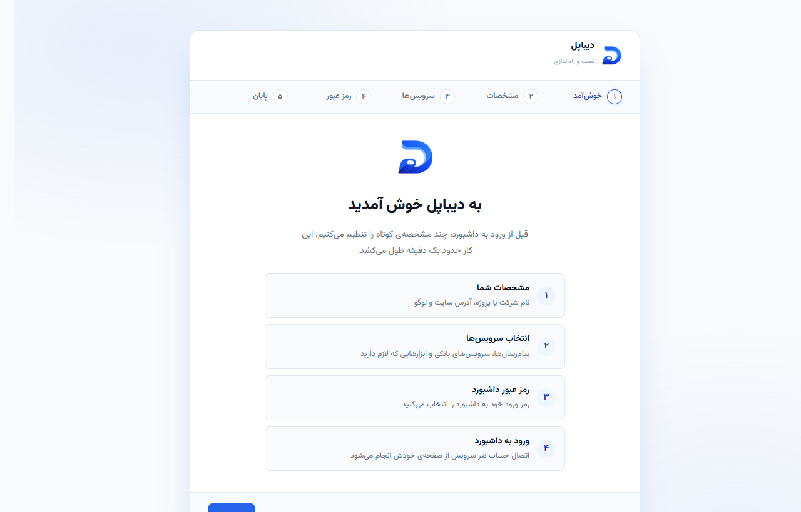
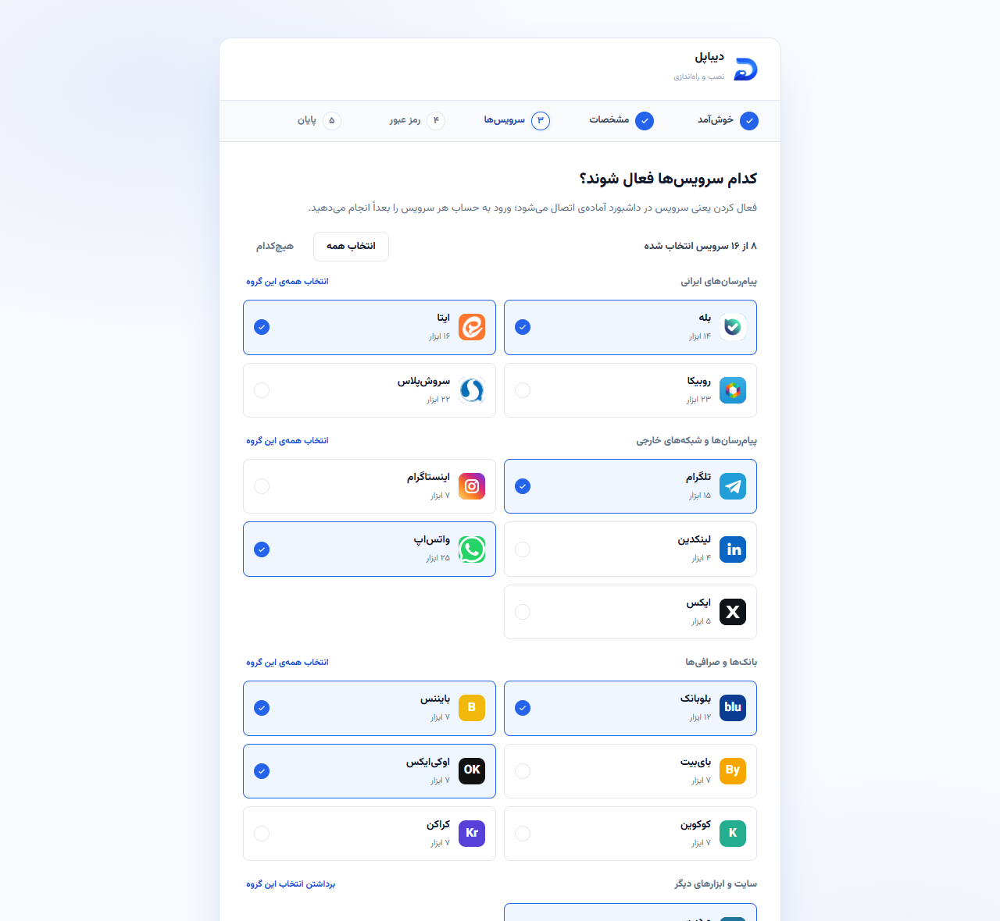
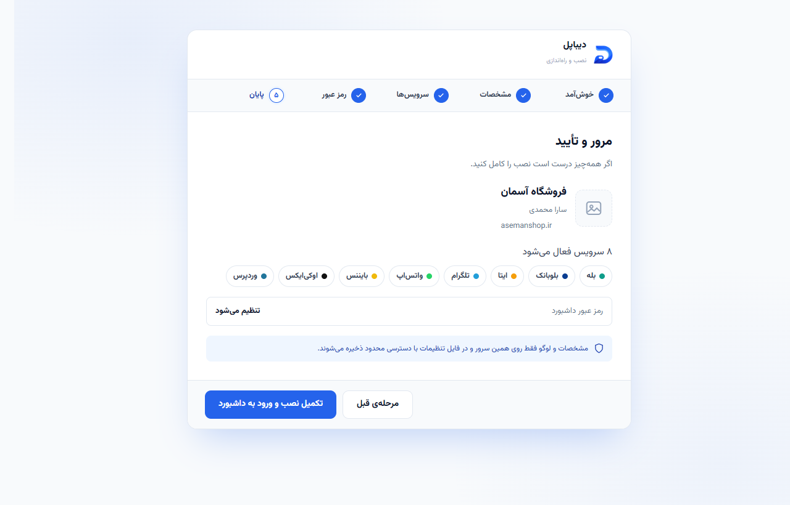
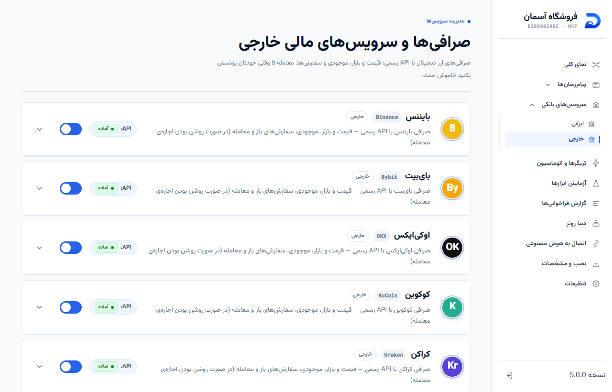
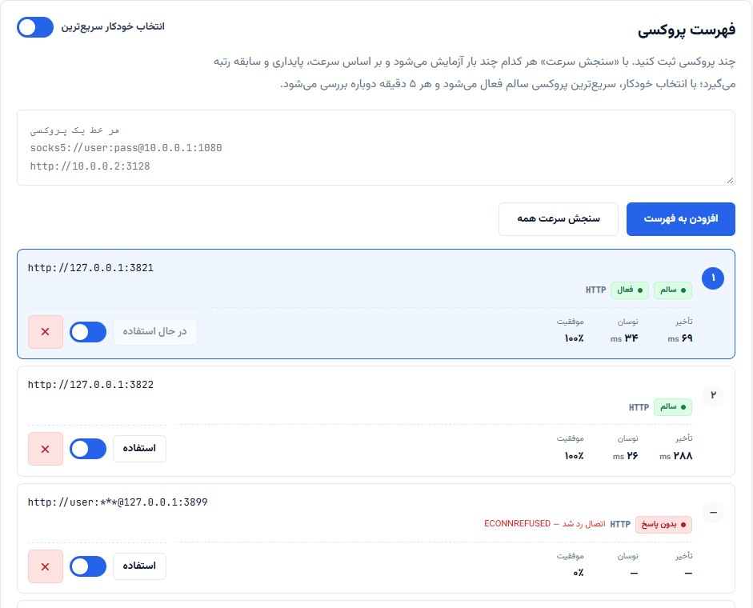

یک قرارداد برای همه
مدل بهجای یادگیری بیستویک API، ابزارهای همشکل میبیند: فهرست چتها و ارسال پاسخ در پیامرسانها، قیمت و موجودی در صرافیها.
پیامرسانها، بانک و صرافیها در یک قرارداد MCP
دیبا پل یک سرور MCP و داشبورد محلی است که پیامرسانهای ایرانی و خارجی، بلوبانک، صرافیهای ارز دیجیتال و وردپرس را به Claude، Cursor و هر کلاینت هوش مصنوعی وصل میکند.
get_chatsآمادهsend_messageآمادهai_replyآمادهیک endpoint، بیستویک سرویس؛ همان چیزی که مدل میبیند.
چرا دیبا پل
هر پیامرسان، بانک و صرافی زبان، نشست و محدودیت خودش را دارد. دیبا پل این تفاوتها را پشت یک قرارداد MCP جمع میکند تا مدل فقط روی کار تمرکز کند.
مدل بهجای یادگیری بیستویک API، ابزارهای همشکل میبیند: فهرست چتها و ارسال پاسخ در پیامرسانها، قیمت و موجودی در صرافیها.
تریگرها روی پیام ورودی، فراخوانی ابزار یا خطا واکنش میدهند و پاسخ هوشمند، فوروارد یا Webhook را اجرا میکنند.
نشستها و حافظه در پوشهی دادهی خودت میمانند. برای شروع نه حساب ابری لازم است، نه کلید واسطه.
قابلیتها
لایهی ارتباط، لایهی تصمیم و لایهی حافظه کنار هم کار میکنند؛ نه بهصورت شش ابزار پراکنده.
پیامهای خصوصی، گروهها و کانالها را از همهی اتصالها در یک نمای زنده ببین و مستقیم پاسخ بده.
برای هر رویداد یک قانون بنویس: پیام ورودی، فراخوانی ابزار، خطا یا اجرای دستی.
هر قانون را میتوانی جداگانه فعال یا خاموش کنی.
گفتگو، اطلاعات پایدار و مخاطبان شناختهشده ذخیره میشوند تا پاسخها به کسبوکار تو نزدیکتر باشند.
کلاینت هوش مصنوعی ابزارها را مستقیم صدا میزند؛ با همان توکن و همان endpoint.
# ابزار در دسترس مدل send_message { chat, text } get_updates { provider } memory_search { query }
اتصالها
پیامرسانها با نشست حساب کاربری خودت کار میکنند و صرافیها با کلید API رسمیای که خودت میسازی؛ بدون ربات و بدون واسطه.
راهنمای اتصال هر سرویساینستاگرام، ایکس و لینکدین هم در داشبورد هستند؛ وضعیت هر بخش را ببین.
نصب مرحلهبهمرحله
بار اول که داشبورد را باز میکنی، نصبکننده قدمبهقدم جلو میبرد: مشخصات و لوگوی خودت، سرویسهایی که لازم داری و رمز عبور داشبورد.
میبینی چه چیزهایی قرار است تنظیم شود.
نام شرکت یا پروژه، آدرس سایت و لوگو.
تیک بزن یا «انتخاب همه» را بزن.
رمز ورود داشبورد را خودت انتخاب میکنی.



بعد از نصب، از بخش «نصب و مشخصات» داشبورد میتوانی مشخصات را عوض کنی و هر زمان سرویس تازهای فعال کنی.
بانک و صرافیها
بلوبانک، پنج صرافی ایرانی و پنج صرافی خارجی با ابزارهای همشکل: قیمت، دفتر سفارش، کندل، موجودی و سفارشهای باز.

شبکه
چند پروکسی HTTP یا SOCKS5 ثبت کن. دیبا پل هر کدام را چند بار میسنجد و بر اساس سرعت، پایداری و سابقه رتبه میدهد.

شروع سریع
با Node.js 22.19+ یا Docker اجرا کن. تنظیمات، نشستها و حافظه در پوشهی data میمانند.
پروژه را با npx یا Compose بالا بیاور.
نصبکننده مشخصات، سرویسها و رمز عبور را از تو میگیرد؛ بعد حساب هر سرویس را وصل کن.
دستور MCP را از داشبورد کپی کن و در Claude یا Cursor بگذار.
# بدون نصب دائمی npx diba-mcp
سپس http://127.0.0.1:3790 را باز کن.
# از ریشهی پروژه docker compose up -d --build
دادهها در volume پروژه باقی میمانند.
نقشهی راه
مسیر محصول روی سه لایهی ارتباط، دادهی مالی و تعامل هوشمند با مشتری جلو میرود.
نقشهی راه کاملپیامرسانهای ایرانی و خارجی، صندوق ورودی یکپارچه، تریگرها و ابزارهای MCP.
بلوبانک (آزمایشی، با توکن نشست) و ده صرافی ایرانی و خارجی با API رسمی اضافه شدهاند؛ اتصال به APIهای رسمی بانکی هنوز انجام نشده است.
اتصال پیج، دریافت دایرکت و پاسخ هوشمند با تأیید انسان.
امنیت و کنترل
دیبا پل یک ابزار محلی است؛ دادهی مشتری را جای دیگری نمیفرستد و تصمیمهای حساس را به تأیید انسان میسپارد.
data خودت ذخیره میشوند.مستندات
از نصب و اتصال تا تریگرها و ابزارهای MCP؛ همهچیز در مخزن پروژه است.
پرسشهای کوتاه
نه. دیبا پل روی ماشین خودت اجرا میشود و نشستها، حافظه و تنظیمات را در پوشهی data نگه میدارد. دسترسی کلاینتها با توکن خودت کنترل میشود.
پیامرسانها: واتساپ، تلگرام، بله، روبیکا، سروشپلاس و ایتا. شبکههای اجتماعی: اینستاگرام، ایکس و لینکدین. مالی: بلوبانک، بایننس، بایبیت، اوکیایکس، کوکوین و کراکن. سایت: وردپرس.
نه، مگر خودت بخواهی. معامله در هر صرافی بهطور پیشفرض خاموش است. حتی با روشن بودن آن، ابزار ثبت سفارش بدون تأیید صریح فقط پیشنمایش برمیگرداند. کلید API را بدون دسترسی برداشت بساز.
هر کلاینتی که MCP را پشتیبانی کند؛ از جمله Claude Code، Claude Desktop، Cursor و کلاینتهای JSON سازگار.
Node.js 22.19 یا بالاتر، یا Docker. برای اتصال، حساب کاربری همان سرویس و دسترسی به شبکه؛ اگر لازم شد، از فهرست پروکسی استفاده کن.
آمادهای؟
همین حالا پروژه را اجرا کن و اولین پیام را از داشبورد بفرست.